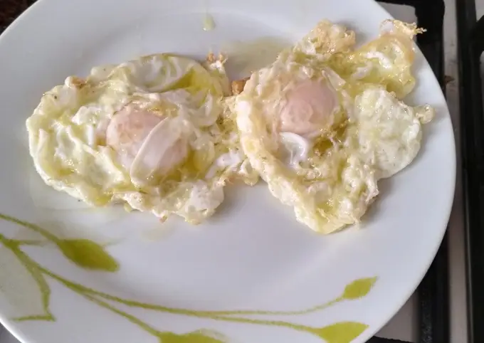

El huevo frito es un huevo hecho en una sartén caliente. La cocción perfecta del huevo frito proporciona una yema cremosa y una clara firme y suave. Es un clásico de la cocina francesa que se ofrece tanto en desayunos, brunch, almuerzos como cenas.
Ingredientes:
- 10 dientes de ajo
- huevos (1 por persona)
- 12 rebanadas de pan duro
- 150 g de jamón serrano
- 3 litros de caldo de carne o agua (depende de la cazuela donde la preparéis)
- Sal y pimienta (al gusto de cada casa, recordad que lleva jamón)
- 2 cucharadas de pimentón dulce
- 50 ml. de aceite de oliva virgen extra
- 6 g. de sal final (al gusto de cada casa, recordad que lleva jamón)
- g. de pimienta negra recién molida (opcional)
Procedimiento:
- a calentar el caldo.
- el pan en rebanadas finas y las tostamos sin aceite en una sartén antiadherente.
- Las reservamos cerca del calor.
- Aparte, en una olla honda, freímos los ajos pelados y cortados en láminas con el aceite de oliva.
- A continuación, añadimos los tacos de jamón.
- Agregamos el pimentón (con cuidado de que no se queme) e, inmediatamente después, el caldo caliente.
- Hervimos todo unos 5 minutos y añadimos el pan tostado.
- Cocinamos a fuego bajo hasta que el pan se ablande.
- ya fuera del fuego los huevos, dejándolos caer en la sopa en forma de hilillo, sin parar de mover con una cuchara de madera para que se distribuya bien por toda la sopa.
- Probamos y sazonamos al gusto.
- Servimos muy caliente en cuencos o en platos hondos.